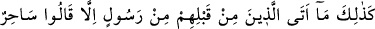
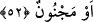
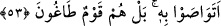

Burhânu’l-Kur’an’da da birinci firardan maksadın, “taati terkten firar”, ikincisinden
maksadın da “Allah’a şirkten firar” olduğu, tekrarın mevzû bahis olmadığı belirtilmiştir.
et-Te’vîlâtü’n-Necmiyye’de bu hususta şöyle bir izah geçmektedir: Allah’ın
vahdaniyetinin mârifeti husûsunda O’nun yanına nefis, hevâ, dünya ve âhiret gibi başka
bir ilâhı koyup da onlara yönelerek ibâdet ve rağbeti onlara tahsis etmeyin. Zira tevhîd;
onlardan yüz çevirmek, onların bağlı bulunduğu şeylerden ilgiyi kesmek ve Allah’a
kaçmakla mümkündür. Çünkü ancak, Allah’a kaçışı hakîkî olanın O’nunla buluşması
sahih olur. İşte bu da kemâl-i tevhîddir. Şüphesiz ki ben sizi “Allah’tan uzak kalma”
cezâsının elim durumuna ve varlık sahasında O’na şirk koştuğunuz zaman da “bu iki ilah
tayininizin” azabına karşı uyarıyorum. Çünkü Allah kendisine şirk koşulmasını asla
bağışlamaz.
52. İşte böylece, onlardan öncekilere her hangi bir peygamber geldiğinde hemen:
“O, bir büyücüdür veya delidir,” dediler.
“İşte böylece” yâni Rasûlullah (s.a.)’in Kureyş’in ve diğer arap müşriklerin
“büyücü” veya “cinlenmiş” tâbirini kullanarak kendisini yalanlamaları tarzında
karşılaştığı hâdise, önceki ümmetlerin peygamberlerine karşı da vukû bulmuştur.
Nitekim peşinden gelen cümle bu gerçeği açıklamaktadır: “Onlardan öncekilere her
hangi bir peygamber” Allah’ın elçilerinden bir elçi “geldiğinde” onun hakkında da
mutlaka “hemen O, bir büyücüdür veya delidir, dediler.”
Yâni o peygamber, eğer bunlara mucize gösterse ona sihir derler, eğer haşir ve
yeniden dirilmeden haber verse onun sözünü delilerin sözüne benzetirler. Dolayısıyla
ey Rasûlüm, sen de kavminin yalanlamasına üzülme!
53. Bunu (nesilden nesile) birbirlerine vasiyet mi ettiler? Doğrusu onlar azgın bir
topluluktur.
“Bunu (nesilden nesile) birbirlerine vasiyet mi ettiler?” Yâni sâhir ve mecnûn
demeyi evvelkilerle şimdikiler hep birbirlerine tavsiye mi ettiler ki hep aynı çirkin söz
üzerinde ittifak ediyorlar? Halbuki onların zamanlarıyla bunlarınki çok farklı. Bu ifâde,
onların bu yaptıklarının kabul edilemez olduğunu belirtmekte ve onların bu hallerinin
garipliğine delâlet etmektedir.
“Doğrusu onlar azgın bir topluluktur.” Bu ifâde; onların, zaman açısından